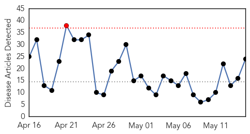

30 Day Trends
Web: 1 alerts, 0 warnings
Twitter: 2 alerts, 0 warnings
Top Articles:
- 0.996
- Australian Researchers Working On Universal Flu Shot That Will Provide Lifetime Immunity
- 0.983
- UPDATE 1-Nebraska declares state of emergency in bird flu outbreak
- 0.982
- Nebraska declares state of emergency for bird flu virus
- 0.964
- Egypt: upsurge in H5N1 human and poultry cases but no change in transmission pattern of infection
- 0.953
- Bird flu strikes again
- 0.948
- POULTRY PANIC? Officials, poultry industry scramble to stop bird flu
- 0.940
- Four more cases of Bird Flu confirmed in Iowa’s Buena Vista, Lyon and Osceola counties
- 0.916
- Bird flu prompts Nebraska to declare state of emergency
- 0.886
- Egypt: upsurge in H5N1 human and poultry cases but no change in transmission pattern of infection
- 0.885
- State warns backyard chicken farmers of avian flu
- 0.803
- Flu casts long shadow over Minnesota counties
- 0.768
- Noted Flu Researcher Joins Georgia Poultry Research Centre
- 0.751
- May 15, 2015 Archives
- 0.751
- May 15, 2015 Archives
- 0.751
- May 14, 2015 Archives
- 0.751
- May 14, 2015 Archives
- 0.712
- Avian flu casts long shadow over Minnesota counties
- 0.686
- SDSU lab busy testing area farms for bird flu
- 0.629
- Don’t let the flu slow you down
- 0.588
- Avian Flu Impacting Over 23 Million Birds in Iowa
- 0.580
- Aussie team targets single flu shot for life
- 0.561
- Illinois monitors Avian Influenza impacting surrounding states
- 0.555
- Top 10 health stories from Arizona in past 125 years
- 0.515
- Don't let the flu slow you down
Top Tweets:
-
No tweets found for May 15, 2015
Web/News Articles
Tweets